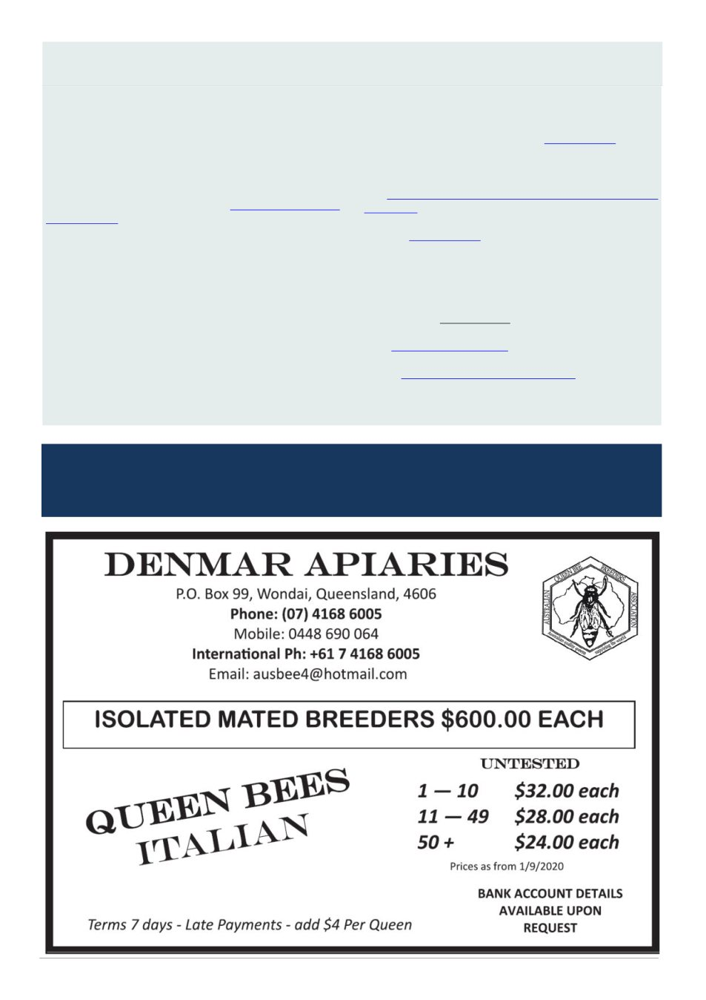

June 2026
27
Varroa Mite Pyrethroid Resistance In Victoria, cont’d
Deadline for copy for the July 2026 journal is 10pm
Wednesday 1st of July 2026
completed
• details of mite inspections completed and the
method used
• current honey culture test results
• that record keeping is being maintained.
We have more information on how to prepare your
honey sample on our website.
Are you a chemical supplier to the Victorian bee-
keeping industry?
Look out for an upcoming detailed email with infor-
mation specific for suppliers of chemical bee treat-
ments.
If you do not receive this email or know a supplier
who didn‘t get this email please contact us to be added
to the list.
VBBWG – Victorian Bee Biosecurity Working
Group
The Victorian Apiarists' Association Annual Confer-
ence (4-6 June) includes a biosecurity symposium on
Saturday 6 June with keynote speakers on varroa re-
sistance and treatment, as well as reviewing the future
threat of Tropilaelaps.
Details and registration via the VAA website.
In collaboration with VAA, many bee clubs have
appointed varroa specialists to provide advice.
Their contact details are available on the VAA web-
site www.vicbeekeepers.com.au/Club-Varroa-Specialist
To contact your VBBWG industry representatives,
visit the VAA website.
Hive disposal and cancelling registration
Are you disposing of, selling or giving away your
hives?
In Victoria, beekeepers must notify the Bees Regis-
trar in writing within 7 days if this happens.
Victorian
beekeepers
can
do
this
through
their BeeMAX online diary
You can find information and appropriate forms to
use on Selling or Giving away a beehive.
(Continued from page 26)